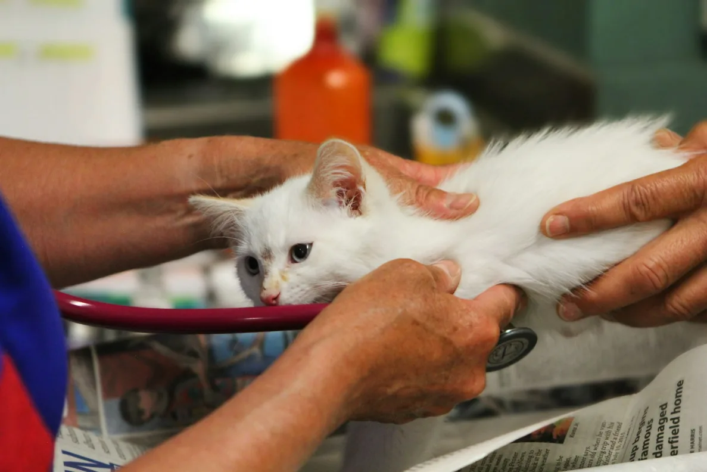
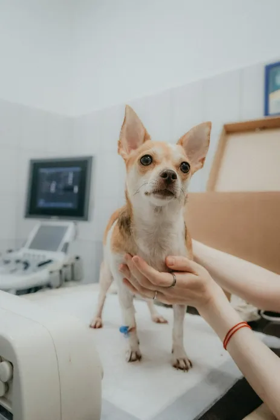
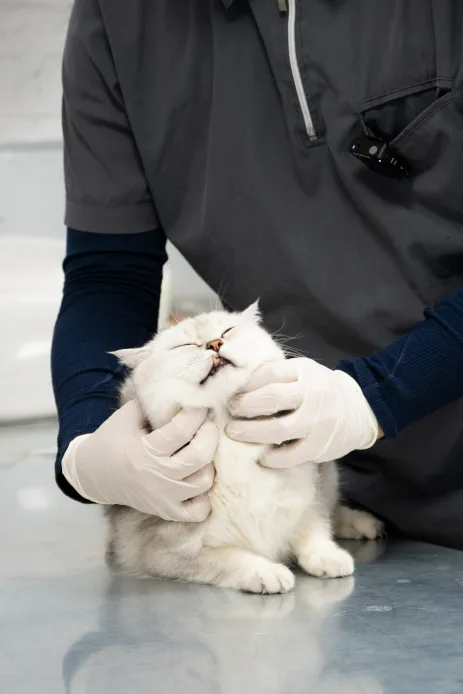

Routine
Wellness Exams
Head-to-tail checks, weight and dental tracking, and a plan you actually understand.
Same-day appointments · Open 24/7
A full-service veterinary clinic and animal hospital for dogs and cats on the harbour. Wellness through emergency, all under one roof — with vets who explain everything twice if you need it.

What we do
Routine care first, urgent care always available. Every visit ends with a plan you can actually repeat at home.
Head-to-tail checks, weight and dental tracking, and a plan you actually understand.

Core and lifestyle schedules, timed to your pet’s age and how they actually live.

Cleaning, extractions and the home routine that keeps you out of the chair.

On-site imaging and bloodwork, so answers come back in hours, not days.

Routine and soft-tissue procedures, with a call from the surgeon the same evening.

Walk in at any hour. A veterinarian is on site, not on call, every night of the year.
(555) 017-2400
Find us
Full-service clinic and 24-hour animal hospital for dogs and cats.
| Mon – Fri | 07:30 – 19:00 |
|---|---|
| Saturday | 08:00 – 17:00 |
| Sunday | 09:00 – 15:00 |
| Emergency | 24 hours, every day |
Before you arrive
Written the way pet parents actually ask it, so nothing is a surprise on the day.
Pick a service and a day. We confirm by phone within the hour.
Any past records, the food they eat, and a list of what you have noticed.
The same veterinarian sees you at follow-ups wherever we can manage it.
Written, plain-language, and emailed before you reach the car park.
Meet the team
Six veterinarians, one building, no rotating agency staff.



Pet parents
Placeholder testimonials for this demo build — Harbor Paws is a fictional practice.
They called me the next morning to ask how she slept. I had not even thought to ask.
Walked in at 2am with a limping spaniel. Saw a vet in ten minutes, not a triage queue.
The plan came by email before I got home. First vet who has ever done that.
Common questions
Any records from a previous practice, the food they currently eat (a photo of the bag is fine), and a short list of anything you have noticed at home. If your pet is anxious in the waiting room, tell us when you book and we will bring you straight through.
We work with all major pet insurers. We ask for payment at the time of the visit and send the itemised claim documentation the same day, so reimbursement is not held up by our paperwork. For planned surgery we can prepare a written estimate in advance.
Healthy adult dogs and cats do well with one full wellness exam a year. Puppies and kittens need a short series in the first months, and pets over about seven benefit from twice-yearly checks, because the things we are watching for change faster at that age.
Yes. A veterinarian is physically on site overnight, not on call from home. You do not need an appointment and you do not need to be an existing client to be seen in an emergency.
Book an appointment
We confirm by phone within the hour during opening times. For anything urgent, call the 24/7 line instead of filling this in — it is faster.
Call (555) 017-2400Book a wellness exam, or just call and ask us something. Both are free to start.
Book an Appointment